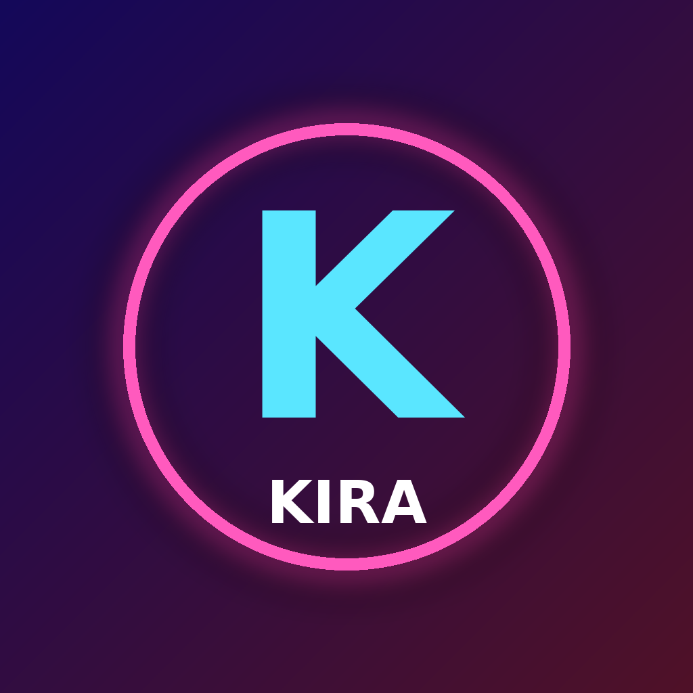

Last updated: 12 November 2026
Marius Golz, e-mail: marille3010@gmail.com
Kira GTA6 (“Kira”) is a private dashboard that runs only on the controller’s own computer. It is used solely to publish the controller’s own videos to the controller’s own TikTok account. There is no public sign-up.
user.info.basic: open ID, display name and avatar.The data is used only to show which TikTok account is connected and to upload and publish videos that the account owner has explicitly confirmed. Legal basis: Art. 6(1)(b) GDPR (performing the service you requested) and Art. 6(1)(a) GDPR (your authorization on TikTok).
Tokens and profile data are stored only locally on the controller’s computer and are never sold or shared with third parties. Videos and captions are transmitted only to TikTok. Kira does not use the data for advertising or profiling.
Data is kept as long as the TikTok account is connected. You can disconnect at any time in Kira or revoke access in the TikTok app (Settings → Security → Manage app permissions); the stored tokens are then deleted.
This website is hosted by GitHub Pages (GitHub Inc., USA). GitHub may process your IP address in server logs to deliver the site. This website uses no cookies, analytics or tracking.
You have the right to access, rectification, erasure, restriction, data portability and objection (Art. 15–21 GDPR), and the right to lodge a complaint with a data protection supervisory authority. Contact the controller by e-mail.
Verantwortlich: Marius Golz, marille3010@gmail.com. Kira läuft nur auf dem eigenen Rechner des Verantwortlichen und veröffentlicht ausschließlich dessen eigene Videos auf dessen eigenem TikTok-Konto. Von TikTok erhält Kira Open-ID, Anzeigename, Profilbild und Zugangs-Token; diese werden nur lokal gespeichert, nicht weitergegeben und nach Trennen der Verbindung gelöscht. Diese Website wird über GitHub Pages bereitgestellt und setzt keine Cookies oder Tracking ein. Es gelten die Rechte nach Art. 15–21 DSGVO sowie das Beschwerderecht bei einer Datenschutz-Aufsichtsbehörde.